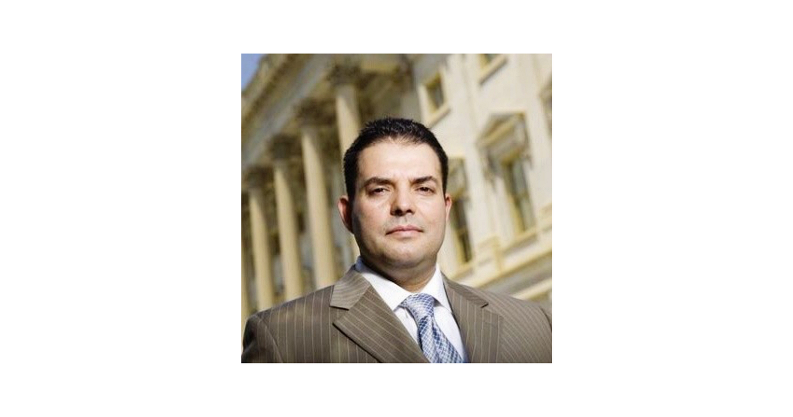

We recently spoke with Jaime Gracia, Acquisition Leader and Director of The Wolverine Group, Inc., former procurement executive at the IRS, Department of State, and DHS, and a Navy veteran, about the latest contribution to the evolving DITAP landscape: DITAP Strategy for Executive Leaders, created as part of the DITAP Refresh led by CivicActions.
This new offering focuses on helping senior leaders move beyond compliance-driven procurement to lead with strategic agility and purpose. Gracia shared how the program equips executives to become “risk-intelligent enablers,” fostering environments where experimentation, modular contracting, and agile delivery can thrive. By reframing leadership around empowerment, collaboration, and user-centered outcomes, the course helps agencies align with the Revolutionary FAR overhaul and the refreshed DITAP model.
He also discussed how DITAP Strategy for Executive Leaders gives executives the tools to translate strategic insight into tangible action, from shaping acquisition policy and influencing oversight bodies to embedding digital transformation principles within their organizations. Through practical frameworks and real-world case studies, leaders learn not just what needs to change, but how to create the organizational momentum to make it happen.
In DITAP Strategy for Executive Leaders, you focus on equipping senior leaders to drive organizational change. What are the most critical leadership behaviors or strategic levers you want participants to adopt to align their agencies with the Revolutionary FAR overhaul and the refreshed DITAP model?
The most critical shift we’re driving is moving executives from risk-averse gatekeepers to risk-intelligent enablers. We need and teach senior leaders to create psychological safety for their teams to experiment with modular contracting, shorter award cycles, and agile delivery methods. The strategic levers are clear: push decision authority down to product owners and contracting officers, break down silos between IT, contracting, budget, and mission teams, and obsess over outcomes. This means leaders who focus on real user value and mission impact, not just safe, process compliance. When executives model ‘fail fast, learn faster’ and remove bureaucratic friction instead of adding approval layers, that’s when transformation accelerates. This is at the heart of DITAP Strategy for Executive Leaders.
How does DITAP Strategy for Executive Leaders prepare executives to translate what they learn into tangible organizational shifts — such as influencing acquisition strategies, shaping policy, or accelerating digital transformation within their agencies?
The program is designed around a simple premise: knowledge without implementation authority is just theory. Executives are guided on how to influence acquisition strategies by giving them the frameworks and case studies to justify modular contracting and shorter award cycles to stakeholders and oversight bodies. We prepare them to shape policy by identifying which internal regulations conflict with digital best practices and providing the evidence base to change them. Digital transformation is accelerated in practice by teaching leaders to build multidisciplinary product teams, shift budget from monolithic systems to iterative delivery, and create the organizational conditions where modern practices can actually take root. They leave with both the “what” and the “how” to drive tangible change.
If you’re ready to level up your procurement practice and help shape the future of digital government, learn more about advancing digital acquisition and procurement training through DITAP.